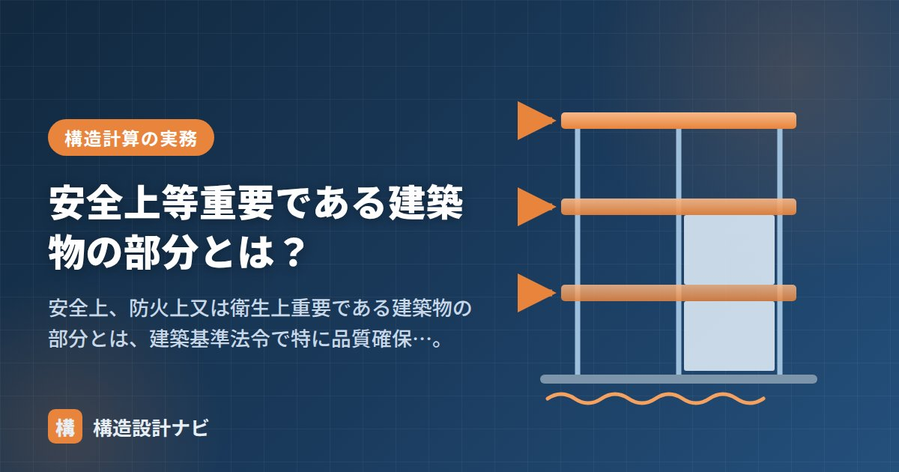

安全上等重要である建築物の部分とは？

安全上、防火上又は衛生上重要である建築物の部分とは、建築基準法令で用いられる区分で、建築物のうち特に重要で、確実な品質確保が求められる部分を指す考え方です。「構造耐力上主要な部分」「主要構造部」というよく似た用語と混同しやすいため、この記事ではそれぞれの観点の違いと、法令上どの場面で登場するのかを整理します。
- 「安全上等重要な部分」は安全・防火・衛生を含む広い概念。
- 「構造耐力上主要な部分」は構造（力を支える）、「主要構造部」は防火の概念。
- 建築材料の品質を定める建築基準法37条などで登場する。
意味
「安全上・防火上・衛生上重要である建築物の部分」は、構造の安全だけでなく防火・衛生も含めて、建築物の重要な部分を広くとらえる考え方です。確認や検査、施工管理などの場面で、特に確実な品質確保が求められる部分として扱われます。
建築物には多くの部位・部材がありますが、そのすべてに同じ厳しさの規制をかけるのは合理的ではありません。そこで法令は「重要な部分」を定義し、そこに使う材料や施工に重点的な規制をかける構成をとっています。この「重要な部分」の切り口が、安全（構造）・防火・衛生のどれかによって、使われる用語が変わるわけです。
似た用語との違い
| 用語 | 観点 | 主な対象 |
|---|---|---|
| 安全上等重要である部分 | 安全・防火・衛生（広い） | 重要な構造・防火・衛生上の部分 |
| 構造耐力上主要な部分 | 構造（力を支える） | 基礎・柱・梁・土台・斜材・床版など |
| 主要構造部 | 防火 | 壁・柱・床・はり・屋根・階段 |
3つの用語は重なりつつも観点が異なります。「安全上等重要」は安全・防火・衛生を含む広い概念、「構造耐力上主要な部分」は力を支える構造の概念、「主要構造部」は防火の概念です。法令上どの用語が使われているかで対象が変わるため、条文ごとに確認することが大切です。
法令のどこで出てくるか
この用語が代表的に登場するのは、建築材料の品質を定める建築基準法37条です。同条は「建築物の基礎、主要構造部その他安全上、防火上又は衛生上重要である政令で定める部分」に使用する木材・鋼材・コンクリートなどの建築材料（指定建築材料）について、JIS・JASへの適合または国土交通大臣の認定を求めています。具体的にどの部分が該当するかは政令（施行令）で定められています。
実務では、構造計算書や仕様書で使用材料を指定するとき、この規定が根拠となって「JIS適合品を使うこと」が要求されます。鉄筋・鉄骨・コンクリートといった構造材料はもちろん、重要な部分に使う材料は原則として規格品でなければならない、という枠組みを押さえておきましょう。
「構造耐力上主要な部分」（施行令1条3号）と「主要構造部」（法2条5号）は対象が一致しません。たとえば基礎は構造耐力上主要な部分ですが、主要構造部ではありません。逆に、防火上重要でも構造的に主要でない間仕切壁が主要構造部に含まれることもあります。試験でも実務でも取り違えやすいポイントです。
よくある質問
Q1. なぜ3つも似た用語があるのですか？
規制の目的が異なるためです。構造安全の規定は「構造耐力上主要な部分」を、防火の規定は「主要構造部」を対象とし、材料品質のように安全・防火・衛生をまたぐ規定では「安全上等重要である部分」という広い概念が使われます。
Q2. 実務ではどう使い分ければよいですか？
条文を読むときに「どの用語で対象が書かれているか」を必ず確認することに尽きます。同じ柱や梁でも、構造規定・防火規定・材料規定で根拠となる用語が異なるため、用語から対象範囲を逆算する癖をつけると誤読を防げます。
仕様書の材料指定欄に「JIS適合品」とだけ書いて済ませている若手をよく見かけますが、法37条の対象部分かどうかで求められる裏付け（試験成績書や認定書の添付）の重みが変わります。私は審査対応の際、まず政令の該当条文番号を仕様書に明記させるようにしています。
「構造耐力上主要な部分」「構造強度」「既存不適格」をどうぞ。
3つの用語を1枚で比較する
| 安全上等重要である建築物の部分 | 構造耐力上主要な部分 | 主要構造部 | |
|---|---|---|---|
| 根拠 | 建築士法施行規則等 | 建築基準法施行令1条三号 | 建築基準法2条五号 |
| 目的 | 工事監理・確認の重点化 | 構造安全の確保 | 防火性能の確保 |
| 誰のための概念か | 工事監理者・検査者 | 構造設計者 | 意匠設計者・防火担当 |
| 使われる場面 | 中間検査の対象工程、工事監理報告 | 構造計算、10年瑕疵担保 | 耐火要求、大規模の修繕の判定 |
| 代表例 | 基礎配筋、鉄骨溶接部、柱梁接合部 | 基礎・柱・はり・耐力壁・土台・斜材 | 壁・柱・床・はり・屋根・階段 |
3つとも「重要な部分」を指す言葉ですが、「誰が、何のために重要と考えるか」が違います。構造設計者にとって重要なのは構造耐力上主要な部分、防火担当にとって重要なのは主要構造部、そして工事監理者にとって重要なのが安全上等重要である建築物の部分——という整理をすると、混同しなくなります。
工事監理での具体的な運用
実務で気をつけたい点
| 注意点 | 内容 |
|---|---|
| 用語を混ぜて使わない | 報告書や打合せ記録では、どの法令の用語かを明記する。相手が別の意味で受け取る恐れがある |
| 検査のタイミングを逃さない | 配筋・溶接・金物は施工が進むと確認できなくなる。工程表に検査日を先に入れる |
| 写真記録を残す | 隠れる部分は写真が唯一の証拠。定規・黒板を入れて位置と寸法がわかるように撮る |
| 是正の確認まで行う | 指摘して終わりではなく、直した状態を再確認して初めて監理が完了する |
| 中間検査の対象を確認 | 特定行政庁によって対象工程が異なる。着工前に必ず確認する |
まとめ
- 安全上等重要である部分は、安全・防火・衛生を含む重要部分の広い概念。
- 建築材料の品質を定める法37条（指定建築材料）などで登場する。
- 構造耐力上主要な部分は構造、主要構造部は防火の概念。基礎は前者のみに含まれる。
- 条文ごとにどの用語かを確認し、対象を取り違えないことが大切。